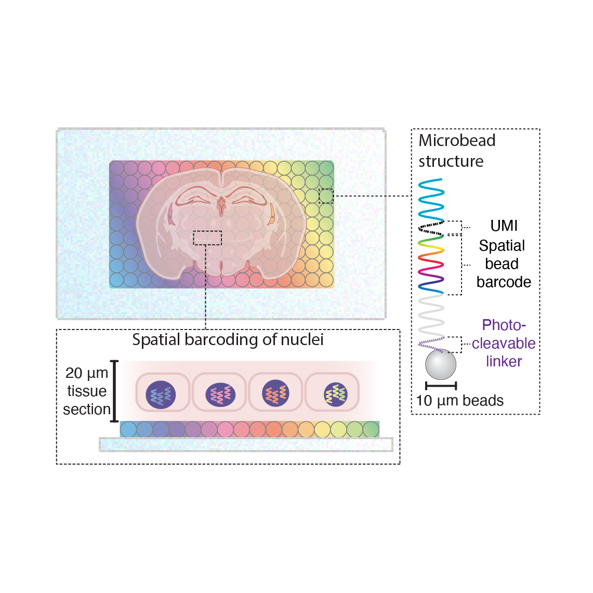
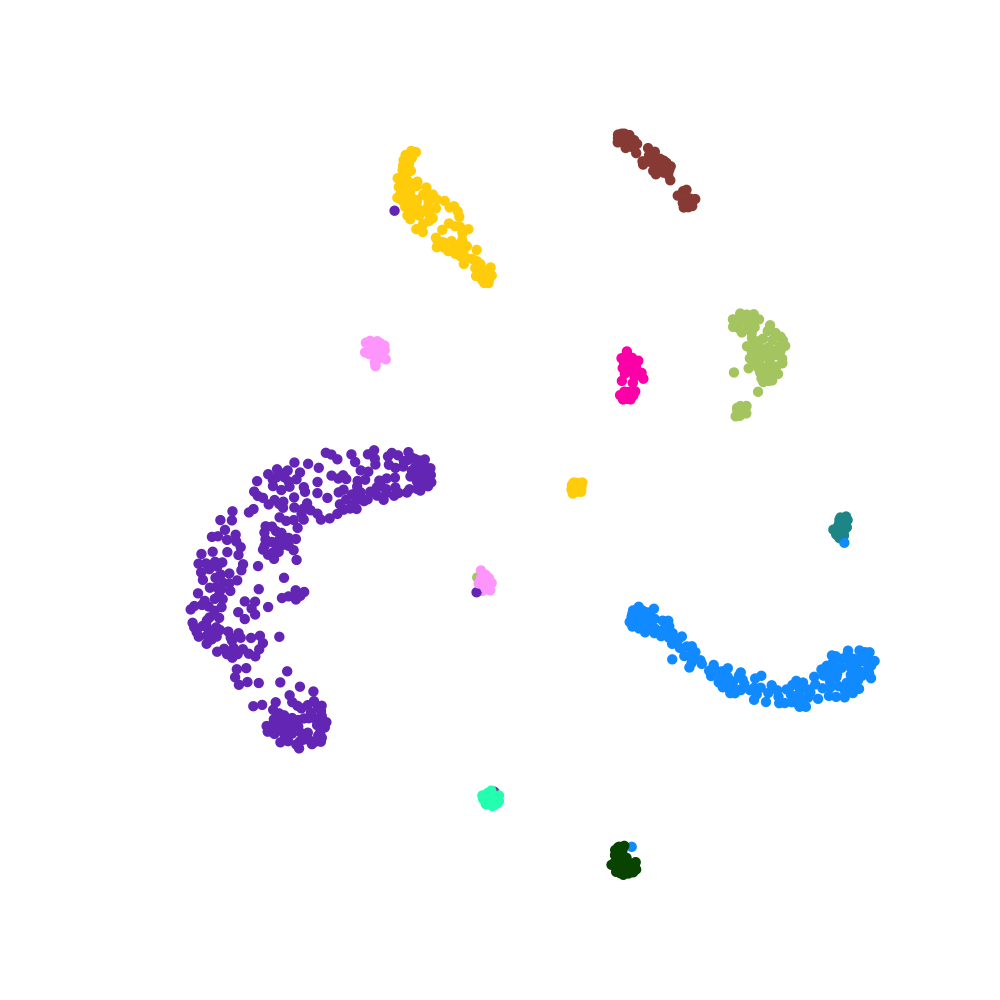

Understanding how chemicals in our environment cause disease has long been held back by a lack of tools. We are building spatial single-cell genomics technologies and high-throughput screening platforms to reveal, cell by cell, how exposures remodel tissues and drive disease.
We use spatial single-cell genomics (Slide-tags) to capture DNA mutations, epigenetic states, and gene expression in single nuclei, together with their precise spatial coordinates within intact tissue. Barcoded nuclei are compatible with virtually any established single-cell sequencing workflow, making the platform broadly applicable. We also incorporate fluorescent and histological imaging of tissues to enrich datasets for computational modelling, diagnostic development, and cross-modal integration.

Traditional toxicology studies are costly, slow, and test compounds individually, yet real-world exposures involve complex mixtures. We are developing high-throughput in vitro and in vivo screening platforms designed to enable dose- and time-resolved single-cell multiomic readouts across thousands of exposures simultaneously.
The multimodal datasets generated by our experimental platforms — spanning the genome, epigenome, transcriptome, and spatial context — require new computational approaches to interpret. We are developing frameworks to integrate these data modalities, model exposure-driven tissue evolution, and identify vulnerable cell states. A key goal is building predictive models trained on characterised exposures that generalise to unseen chemicals, enabling in silico risk assessment at scale.

Our research is generously supported by the MRC LMS.